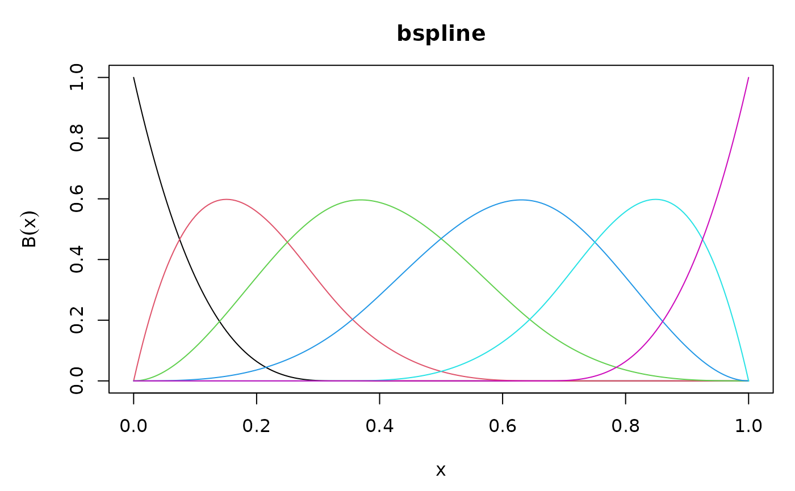
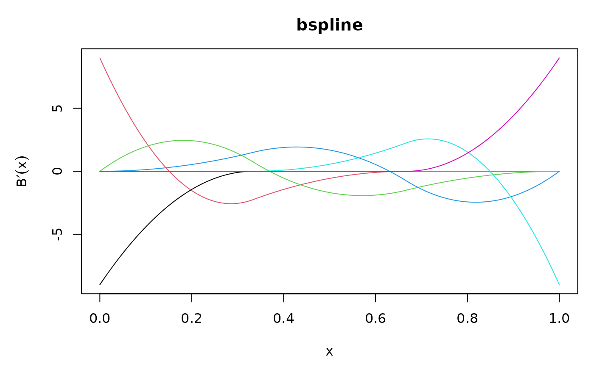
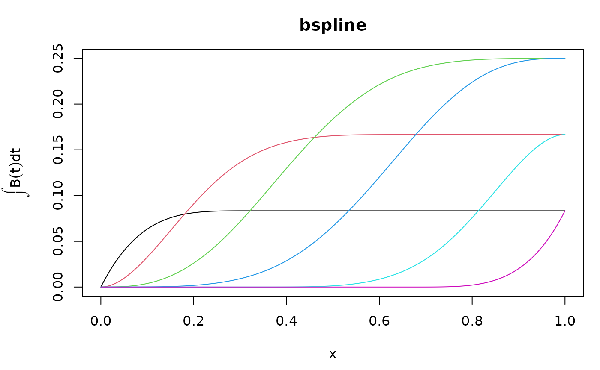
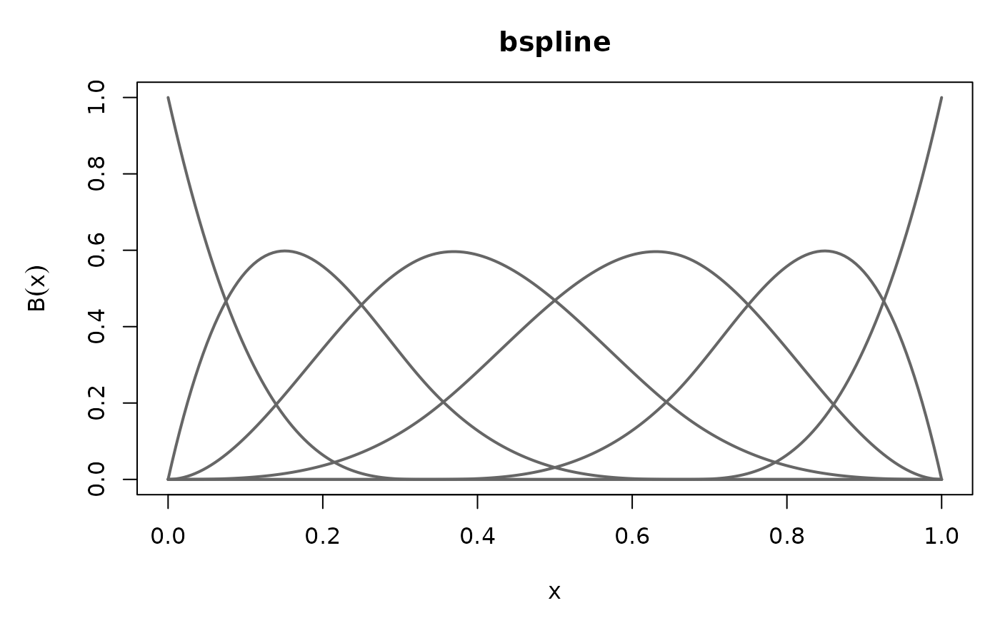
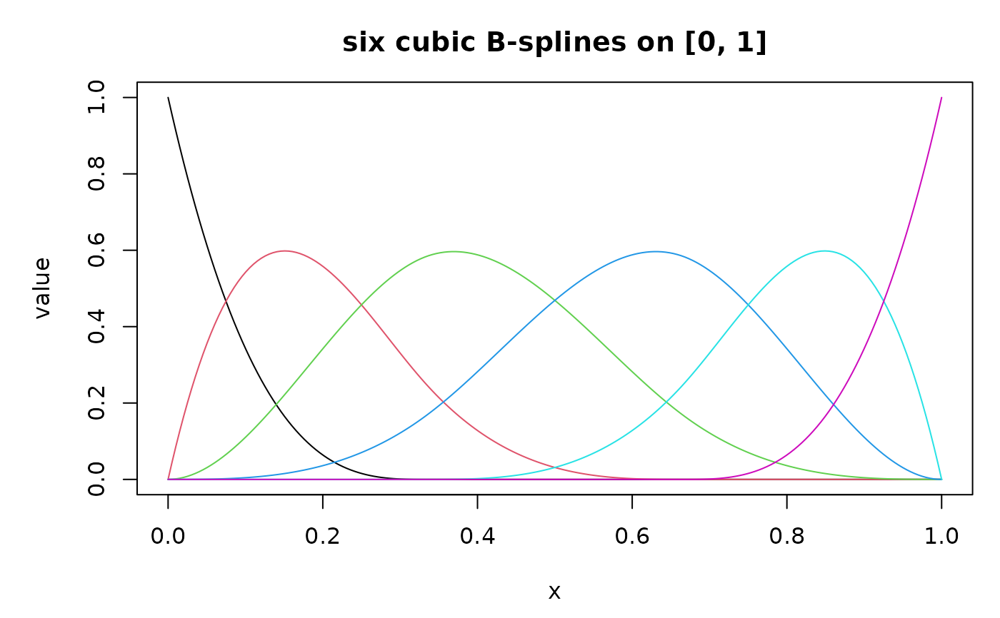
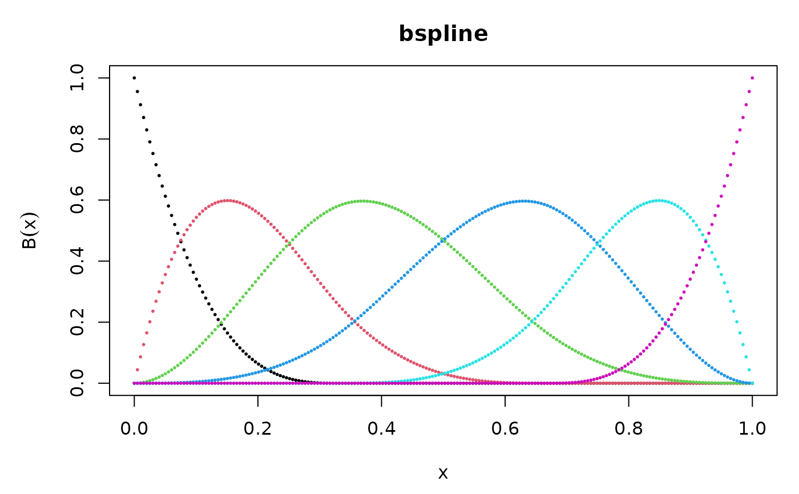
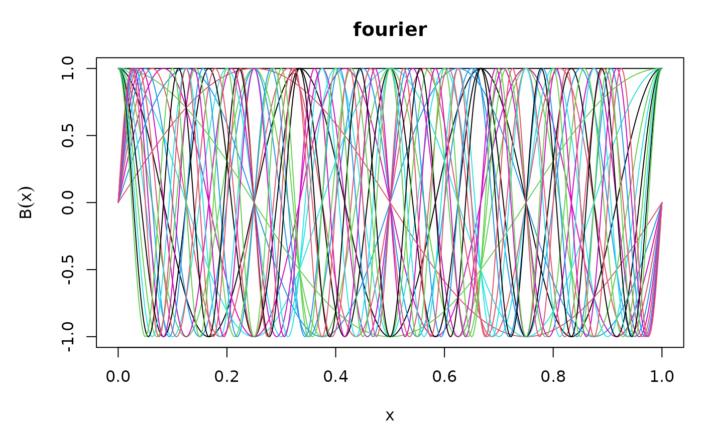

Draws all @dimension functions of a basis on one panel, over an equally
spaced grid covering the whole interval. order selects what is drawn: the
functions themselves, a derivative of any order, or the integral anchored
at the lower endpoint. One line per basis function, no legend, with the
family name as the title.
Arguments
- x
A basis object of one variable, of any class inheriting from basis. A basis of several variables throws an error naming the alternatives.
- order
What to draw.
0, the default, draws the basis functions; a positive whole number draws that derivative;-1draws the integral from the lower endpoint. Anything else throws, including a fraction, a value below-1and a vector of length other than one.- n
The number of grid points, default
200. Raise it for a basis with many knots or a high frequency, where 200 points leave a curve visibly polygonal. The cost is one evaluation onnpoints.- ...
Passed to
graphics::matplot(). A value given fortype,lty,xlab,ylabormainreplaces the method's own choice; see the section above for what those choices are.
What is drawn
The grid is n equally spaced points from @lower to @upper, endpoints
included, and the curves are whichever of basis_eval(), basis_deriv()
or basis_int() order names. The vertical axis is labeled to match:
\(B(x)\) at order 0, \(B'(x)\) at order 1, \(B^{(k)}(x)\) above
that, and \(\int B(t)\,\mathrm{d}t\) for the integral.
Nothing distinguishes one curve from another beyond its position:
matplot() cycles its default colors and the columns carry no legend, so
basis_colnames() is where a column's identity comes from.
Which graphical arguments reach matplot()
All of them. The method chooses type, lty, xlab, ylab and main,
and a value given for any of the five replaces the choice rather than
colliding with it, so plot(b, main = "my title") retitles the panel and
plot(b, type = "p", pch = 16) draws points. Everything else is passed
through untouched: col, lwd, pch, cex, xlim, ylim, log,
add, bty, las and axes were all checked.
The defaults are type = "l", lty = 1, xlab = "x", main the basis's
@basis_name, and ylab the expression matching order.
Only one variable
A basis of several variables throws. A product of two bases is a surface
over a rectangle and has no picture of this shape; plot a margin, which is
tb@marginals[[1]] for a tensor_basis(), or draw one column of the
product as a surface.
A derivative the family has run out of
An order above the smoothness of the family is legal and draws a flat line at zero: the fourth derivative of a piecewise cubic is zero away from the knots, and the method reports that instead of refusing.
See also
basis_eval(), basis_deriv() and basis_int() for the numbers
behind the three cases of order, and print.basis() for the object's
summary.
Examples
b <- bspline_basis(dimension = 6)
# The six cubic B-splines, their first derivative, and their integrals.
plot(b)

plot(b, order = 1)

plot(b, order = -1)

# Every curve in the third panel starts at zero, which is what anchoring
# the integral at the lower endpoint means.
basis_int(b, 0)
#> bs1 bs2 bs3 bs4 bs5 bs6
#> [1,] 0 0 0 0 0 0
# Graphical arguments the method does not set itself reach matplot().
plot(b, col = "grey40", lwd = 2)

# The five arguments the method chooses itself may be overridden.
plot(b, main = "six cubic B-splines on [0, 1]", ylab = "value")

plot(b, type = "p", pch = 16, cex = 0.4)

# A Fourier basis at a high frequency needs a finer grid than the default.
plot(fourier_basis(dimension = 21), n = 1000)
